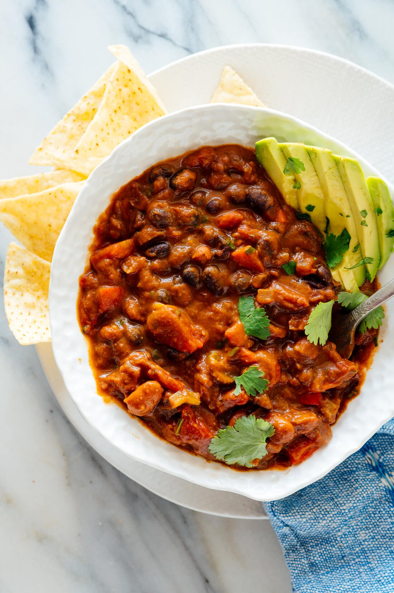

Vegetarian Chili

Description
An easy weeknight chili with plenty of veggies, protein, and heat. The use of chipotle peppers bring a sweet spiciness to the meal that will have family and friends coming back for seconds.
Ingredients
- 1 can black beans
- 1 can kidney beans
- 1 bag frozen corn
- 1 can chipotle peppers in adobo sauce
- 1 large yellow onion
- 1 green pepper
- 1 can diced tomatoes
- 1 avocado
- 1 package taco seasoning
- avocado oil
Steps
- Roughly chop peppers and onions
- Saute peppers and onions in oil until tender
- Add can of diced tomatoes and chipotle peppers. Simmer until mixture thickens and tomatoes break down
- Add taco seasoning and corn. Simmer a few minutes more
- Serve chili hot with sliced avocado on top